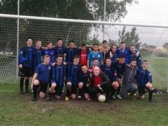

Körülbelül 10 éve kezdtem focizni a lakóhelyemen, Gyömrőn. Ez egy megyei csapat, ahol nagyon szerettem játszani. Sok barátot szereztem, évek alatt fejlődtem és a csapat is egyre jobban teljesített.
2017-2018-as szezonban bajnokok is lettünk, ami nagyon jó érzés volt.
Jelenleg egy pesti csapatnál focizom, ami egy baráti gárda, ahol a mozgás és a játék szeretete a fontos. Szerintem ez a lényeg a sportban.
A gimnáziumi éveim alatt is jól jött a focitudás, mivel volt iskolai bajnokság, ahol nem egyszer a mi osztályunk zsebelhette be az első helyezést.